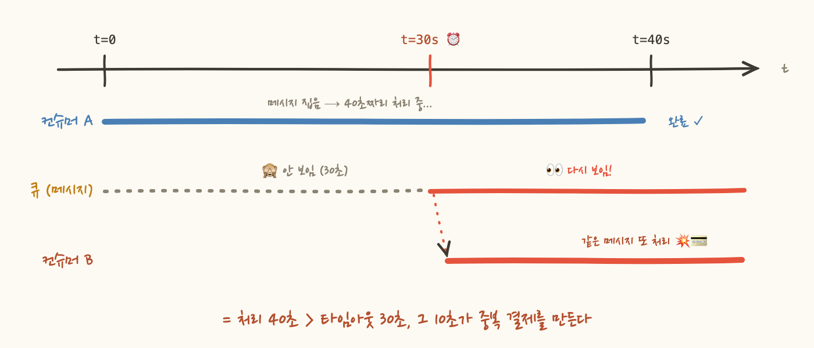
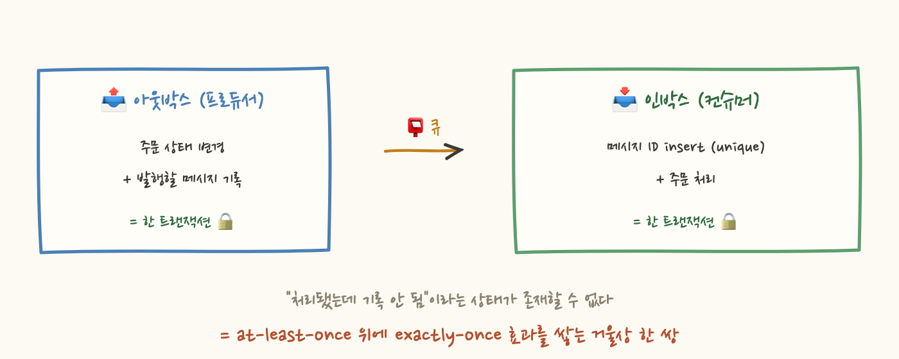

2편의 알람 덕에 이제 증발하는 주문은 10분 안에 잡힙니다. 그런데 몇 주 뒤, 이번엔 정반대의 이상 신호가 옵니다. processed가 enqueued보다 커요. 넣은 것보다 나온 게 많아요. 그리고 고객 문의가 도착합니다. "주문이 두 번 결제됐어요."
로그를 보니 같은 메시지를 서로 다른 컨슈머 두 개가 각각 처리했더군요. 코드는 안 바뀌었어요. 그저 주문 처리 시간이 조금 길어졌을 뿐입니다. 왜 큐는 같은 메시지를 두 번 나눠줬을까요?
범인은 SQS의 visibility timeout입니다(개념은 대부분의 브로커에 같은 형태로 있어요). 컨슈머가 메시지를 읽어가도 큐에서 지워지지 않습니다. 기본 30초 동안 안 보이게만 될 뿐이에요. 그 안에 처리를 끝내고 명시적으로 delete를 호출해야 진짜로 사라지죠. 왜 이렇게 만들었냐면, 컨슈머가 메시지를 집자마자 죽어버리면 지워버린 메시지는 영영 유실되기 때문입니다. "일단 숨겼다가, 완료 보고가 없으면 다시 내놓는다"가 유실을 막는 안전장치인 겁니다.
그런데 주문 처리가 40초 걸리면 어떻게 될까요? 30초 시점에 타임아웃이 만료되고 메시지가 도로 나타나서, 두 번째 컨슈머가 집어갑니다. 첫 번째는 아직 열심히 처리 중인데요. 유실을 막는 안전장치가, 처리가 느려지는 순간 중복 처리의 원인으로 바뀝니다.

"그럼 타임아웃을 60초로 늘리면 되겠네요?" 확률은 줄어요. 하지만 이번엔 처리가 70초 걸리는 날이 오고, 타임아웃 안에 끝냈어도 delete 호출이 네트워크 순단으로 실패하면 메시지는 다시 큐에 나타납니다. 근본 원인은 설정값이 아니에요. SQS 표준 큐의 전달 보장은 at-least-once, 즉 "최소 한 번"이지 "정확히 한 번"을 약속한 적이 없습니다.
이건 SQS의 결함이 아니라 분산 시스템의 정직한 선택이에요. "정확히 한 번 전달"을 네트워크 계층에서 완벽히 보장하는 건 이론적으로 불가능에 가깝고, 그래서 큐는 유실 방지(최소 한 번)를 책임지는 대신 중복 제거를 소비자의 숙제로 남긴 겁니다. 중복은 버그가 아니라 전제 조건이에요.
그래서 컨슈머가 가져야 하는 성질이 멱등성(idempotency)입니다. 같은 메시지가 몇 번 오든 결과가 한 번 온 것과 같아야 한다는 뜻이죠. 구현의 뼈대는 처리 기록이에요. 주문 ID(멱등성 키)를 저장소에 "처리됨"으로 기록해두고, 두 번째 메시지가 오면 걸러내는 거죠.
그런데 여기 마지막 함정이 있어요. "조회해서 없으면 → 처리하고 → 기록한다"로 짜면, 조회와 기록 사이의 틈에 두 번째 컨슈머가 끼어듭니다. 둘 다 "조회했더니 없네?"를 통과하고 둘 다 결제하는 거죠. 검사와 기록은 원자적이어야 합니다. DB unique 제약에 insert 하고 중복 예외를 받거나, Redis SETNX처럼 "없을 때만 쓰기"가 한 동작인 연산을 써야 해요.
Redis에 기록하는 방식에는 한 가지 잔여 위험이 있어요. 결제는 DB에 커밋됐는데 Redis에 기록하기 직전에 프로세스가 죽으면 어떻게 될까요? 재전달된 메시지는 "처리 기록 없음"을 통과하고 두 번째 결제가 나갑니다. 비즈니스 처리와 처리 기록이 서로 다른 저장소에 있어서 생기는 틈이죠.
그래서 완성형은 인박스(Inbox) 패턴입니다. 메시지 ID의 insert(unique 제약)와 주문 처리를 같은 DB의 같은 로컬 트랜잭션에 묶는 거예요. 둘 다 커밋되거나 둘 다 롤백되므로, "처리됐는데 기록 안 됨"이라는 상태 자체가 존재할 수 없게 됩니다. 그리고 이건 어디서 본 구조죠? 아웃박스 패턴의 거울상입니다. 아웃박스는 프로듀서 쪽에서 "DB 커밋과 메시지 발행"을 원자로 묶고, 인박스는 컨슈머 쪽에서 "메시지 소비와 DB 커밋"을 원자로 묶어요. 양쪽에 모두 적용하면 at-least-once 큐 위에서 exactly-once 효과가 완성됩니다.
